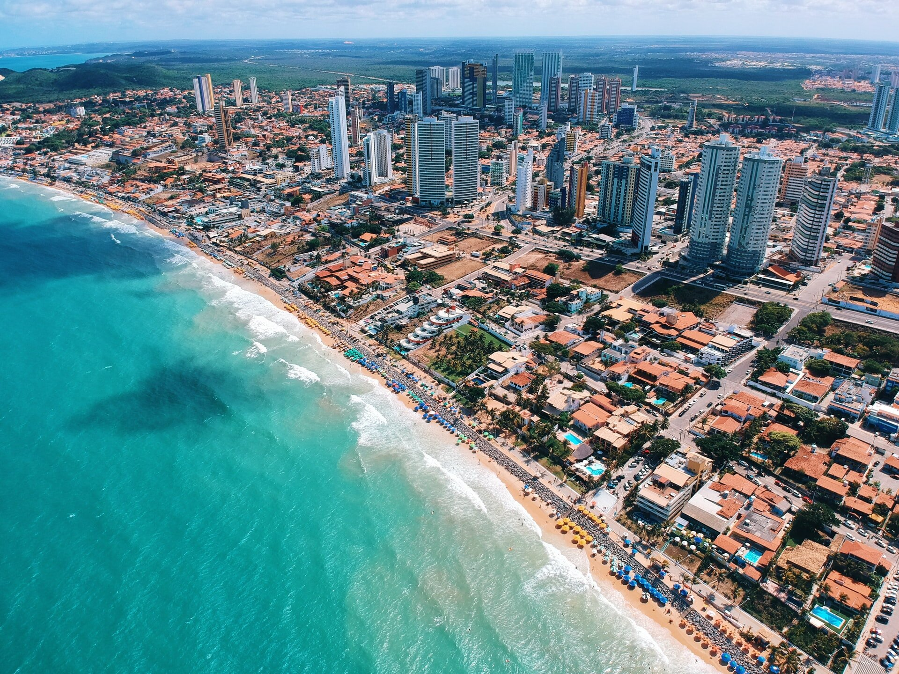

O Rio Grande do Norte fica na Região Nordeste do Brasil, com capital em Natal. Tem cerca de 3,5 milhões de habitantes e é conhecido por suas praias famosas, dunas e lagoas. A economia do estado é baseada no turismo, agricultura (principalmente frutas), salicultura (produção de sal) e petróleo offshore. O Rio Grande do Norte possui uma rica cultura regional, com festas populares como o carnaval e o São João, além de uma culinária típica que destaca frutos do mar. O estado também abriga o maior cajueiro do mundo, localizado em Pirangi.
 Voltar